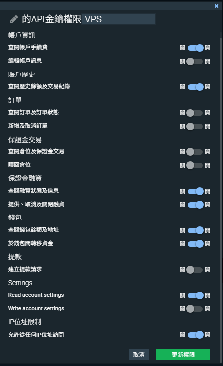

這篇教學會帶你從零開始，一步一步完成 Bitfinex 的註冊、身分驗證（KYC）、入金、錢包設定，一直到建立 API Key 連接放貸工具。不管你有沒有用過加密貨幣交易所，都可以照著順序參考；能否完成並使用相關功能，仍取決於帳戶資格、平台當期要求與審核結果。實際花的時間會因文件準備和驗證要求而不同，KYC 審核時間以 Bitfinex 實際處理為準。
為什麼選擇 Bitfinex？因為它很早就提供 P2P 融資市場，USD 與 USDT 的成交都較活躍；依我們對 USD 放貸的過往經驗，並參考同類工具公開的成績，年化利率大約落在 8%～15%（這是經驗觀察，非回測，也不是 Bitfinex 全市場統計；過去表現不代表未來收益；浮動利率，不構成收益承諾）。如果要使用 CTA 放貸工具自動掛單，第一步就是在 Bitfinex 上開好帳號並設定 API。
⚠️ 先確認你的地區能不能用 Bitfinex（避免白做工 + 被關號）
Bitfinex 有明確的「不接受居民清單」與「制裁名單」，用不實資料或規避手段註冊，可能導致 KYC 不過、帳戶被限制或關閉，先看清楚再動手：
❌ 常見的受限地區（不是完整清單，以官方條款為準）
- 美國（含美屬領地） — 美國居民不在 Bitfinex 服務範圍內，帳戶可能被限制
- 中國大陸 — Bitfinex 服務條款排除中國大陸居民
- 受國際制裁地區 — 包含但不限於：伊朗、北韓、敘利亞、古巴、克里米亞、頓內次克、盧甘斯克、蘇丹
- 加拿大安大略省 — 部分產品可能受限（以官方說明為準）
🚨 三個不要做的事（可能導致驗證失敗、功能受限或帳戶關閉）
- 用 VPN 翻牆假裝其他國家 — 用不實資料或規避限制，被平台認定時，帳戶可能被限制或關閉，資金處理要依平台通知辦理
- 出差到禁止地區時登入 — 即使你是台灣帳號，在受限地區登入也可能觸發風控審查，出差前請先看官方規定
- KYC 填假地址 — 證件、地址證明和自己填的地址要一致；不一致時可能被退件或要求補件，處理方式依官方通知為準
本清單為一般公開資訊整理，最終以 Bitfinex 官方服務條款為準。法規與限制清單會更新，註冊前請再次確認。
開始之前你需要準備什麼
在正式開始註冊之前，請先把以下東西準備好，這樣整個流程可以一次搞定，不用中途停下來找文件：
- 一個常用的 Email 信箱 — Gmail、Outlook 都可以。建議用你平常在用的主要信箱，因為之後登入通知、安全警示都會寄到這裡。
- 身分證件（建議準備雙證件） — 通常以護照為主要身分文件，建議再準備一張身分證；實際可接受的文件以驗證頁面要求為準。兩份證件的中文姓名與出生日期要一致；台灣身分證上沒有英文姓名，英文拼寫請以護照為準，並和你在 Bitfinex 填寫的資料完全相同。
- 地址證明文件（90 天內，必須是英文或拉丁字母） — 這是很多人卡關的地方。地址證明通常需要英文或拉丁字母版本，純中文文件可能不被接受（以驗證頁面要求為準）。台灣用戶常見的做法是向銀行申請英文版對帳單，各銀行是否提供請先確認。水電費帳單如果有英文版也可以，但台灣大多數公用事業帳單都是中文，所以銀行對帳單是最推薦的選擇。
- 手機（用於 2FA 雙重驗證） — 需要安裝 Google Authenticator 或類似的驗證 App。iOS 和 Android 都有免費版本。
預計所需時間
註冊本身通常不需要太久；KYC 審核時間不一定，以 Bitfinex 實際處理為準。建議把文件一次準備齊全再送出，可以減少退件。
第一步：註冊 Bitfinex 帳號
建立帳號
- 打開瀏覽器，前往 bitfinex.com
- 點擊頁面右上角的 「Sign Up」（註冊）按鈕
- 輸入你的 Email 地址
- 設定密碼 — 密碼至少要 8 個字元以上，建議包含大小寫英文字母、數字和特殊符號（例如：
MyBfx2026!Secure）。不要使用跟其他網站相同的密碼 - 勾選服務條款後，點擊 「Sign Up」 送出
- 到你的信箱收取 Bitfinex 的驗證信，點擊信件中的 啟用連結 完成帳號啟用
如果幾分鐘後沒收到驗證信，先檢查垃圾郵件匣。還是沒有的話，回到 Bitfinex 重新發送驗證信。
設定 2FA 雙重驗證（強烈建議）
帳號啟用後，第一件事就是開啟 2FA 雙重驗證。這不是選配，而是保護你資金安全的必要步驟。啟用 2FA 可以降低密碼外洩後被別人登入的風險，但仍要提防釣魚網站和惡意程式，並妥善保管驗證器與備份資料。
- 在手機上下載 Google Authenticator（iOS 到 App Store 搜尋，Android 到 Google Play 搜尋）
- 登入 Bitfinex 後，進入 Account > Security > Two-Factor Authentication
- 選擇 Google Authenticator 作為你的 2FA 方式
- 畫面上會出現一組 QR Code，打開手機上的 Google Authenticator App，點擊右下角的「+」號，選擇「掃描 QR 碼」來掃描它
- App 會開始每 30 秒產生一組 6 位數的驗證碼，把當前顯示的驗證碼輸入到 Bitfinex 網頁上的欄位
- 點擊確認，完成設定
極重要：備份恢復碼
設定 2FA 時，如果畫面提供驗證器設定金鑰或其他備份資料，請依官方指示抄寫在紙上或存進密碼管理器。手機遺失、損壞或重置時，能不能自己恢復，取決於你保留的備份資料；無法恢復的話，就要走 Bitfinex 官方的 2FA 復原程序，可能需要額外身分查核、花上不少時間。
第二步：完成 KYC 身分驗證
為什麼要做 KYC？
Bitfinex 的 KYC 驗證要求較嚴格，這是身分與合規程序的一部分（但完成 KYC 不代表平台不會發生資金損失）。沒通過 KYC 的帳號功能會受到限制，無法進行放貸操作。
驗證等級說明
Bitfinex 目前常見的身分驗證等級如下，功能權限不同（以官方驗證頁面為準）：
- Basic Plus — 最基礎的驗證等級。不能放貸。
- Intermediate（中階驗證） — 需要上傳證件和地址證明。⭐ 依我們目前了解，要使用放貸功能需要做到這一級。
- Full（完整驗證） — 最高等級，可以使用法幣電匯出入金等完整功能。如果你未來打算用電匯入金大額資金，再升級到這個等級即可。
🔑 一句話記住：放貸 = 中階驗證（Intermediate）
只完成 Basic Plus 的帳號，看得到 Funding 頁面但下不了單，API 也會回 verification level insufficient 錯誤。實際使用放貸功能（包含用 API 掛融資單）需要通過中階驗證；入金、轉帳等其他功能的要求可能不同，以官方規則為準。建議把第二步的 6 個欄位一次填完整，等審核通過再進下一步。
如果你只想體驗 CTA 機器人介面、暫時還沒做完 KYC，可以先到會員後台註冊探索功能，等中階驗證通過後再貼 API Key 啟動實單。
中階驗證步驟（共 6 步）
登入 Bitfinex 後，進入 Account > Verification，選擇 Intermediate 驗證，然後按照以下步驟操作：
- 填寫個人資訊 — 姓名、出生日期、居住地址。注意：所有欄位都要用英文填寫。姓名拼寫必須和護照上完全一致，地址用英文填（例如：No. 123, Sec. 4, Zhongxiao E. Rd., Da'an Dist., Taipei City 106, Taiwan）。
- 上傳證件照片 — 上傳護照的照片頁（有照片和個人資訊那一頁），另外再上傳身分證正反面。拍照時確保四個角都完整入鏡，字體清晰可讀，光線充足不反光。
- 自拍驗證 — 這一步需要你拍一張自拍照，照片中必須包含：你本人的臉、手持護照（打開到照片頁）、以及一張手寫紙條。紙條上要寫上：當天的日期（例如 2026/04/08）和「Bitfinex」字樣。三個元素都要在同一張照片中清楚呈現；紙條上是否還要其他內容（例如簽名），請以驗證頁面當下的指示為準。
- 上傳地址證明 — 上傳一份 90 天內開立的英文版地址證明文件。最推薦的是銀行英文對帳單（上面會有你的姓名和地址）。可以向銀行申請英文版對帳單，各銀行是否提供請先確認。
- 填寫財務問卷 — Bitfinex 會問你幾個關於資金來源、年收入級距、投資經驗等問題。這不是考試，但請如實填寫。這些資料會影響你之後的出入金額度上限，如果隨便亂填，後續可能會被要求補充資料。
- 提交等待審核 — 全部資料填完後，點擊送出。審核時間不一定，以 Bitfinex 實際處理為準。審核結果會透過 Email 通知你。
常見被退件原因與解決方式
如果你的 KYC 被退件，不要緊張，通常只是資料問題，修正後重新送出就好。以下是最常見的退件原因：
- 照片模糊或不完整 — 用手機相機直接拍攝，確保對焦清晰。不要用螢幕截圖代替拍照，也不要裁切到證件的邊角。
- 地址證明不是英文 — 地址證明通常需要英文或拉丁字母版本。可以向銀行申請英文版對帳單，各銀行是否提供請先確認。
- 姓名拼寫不一致 — 你在表格中填的英文名字必須和護照上的拼寫完全相同。例如護照上是「WANG, HSIAO-MING」，就不要填成「Xiaoming Wang」。
- 自拍照不符合要求 — 確保照片中同時出現你的臉、打開的護照照片頁、以及手寫紙條（紙條內容依驗證頁面指示，常見為當天日期 + "Bitfinex"）。三者都要清楚可辨識，不能被遮擋。
小提醒
KYC 審核期間，可以先準備入金需要的資料；如果 2FA 還沒設定，也可以趁這時完成。審核通過後，請先確認放貸等功能已經開放，再進入入金和放貸環節。
第三步：入金到 Bitfinex
KYC 通過之後，下一步就是把資金轉進 Bitfinex。這裡介紹兩種方式，新手建議用第一種。
方式一：加密貨幣入金（推薦新手用這個）
這是新手常用的入金方式之一；適不適合你，取決於你現有的資產、兩端平台支援的網路、費用與處理時間。整體流程是：先在你熟悉的加密貨幣交易所用法幣買 USDT，再把 USDT 轉到 Bitfinex。
- 在加密貨幣交易所買 USDT — 如果你還沒有當地加密貨幣交易所帳號，可以選擇你所在地區合規的交易所完成註冊與身分驗證。用法幣入金後，購買 USDT（泰達幣）。
- 在 Bitfinex 取得你的 USDT 入金地址 — 登入 Bitfinex，點擊上方的 Deposit（入金），搜尋選擇 USDT，然後選擇 TRC-20（Tron）網路。頁面會顯示一組入金地址，把它複製下來。
- 從加密貨幣交易所發送 USDT — 回到原本交易所的提幣頁面，選擇 USDT，網路一定要選 TRC-20（與 Bitfinex 那邊一致），貼上剛才複製的 Bitfinex 入金地址，輸入金額後送出。
- 等待區塊鏈確認 — 到帳時間和手續費依發送平台與網路狀況而定，送出前請看兩端當次顯示的費用與條件。到帳後你會在 Bitfinex 的 Wallets 頁面看到餘額。
轉帳前務必確認
- 發送端和接收端的網路必須一致（都選 TRC-20），選錯網路可能導致轉帳失敗或資產損失，不保證能追回
- 地址要用複製貼上，不要手動輸入；地址錯誤可能導致轉帳失敗或資產損失，也要小心剪貼簿被惡意程式竄改
- 第一次轉帳建議先小額測試（金額要符合兩端的最低入金與手續費規則），確認流程沒問題再轉大額
方式二：法幣電匯入金（大額用戶適用）
如果你要轉入較大金額，也可以考慮用國際電匯直接匯美元到 Bitfinex。電匯的使用資格、最低金額、到帳時間與費用（平台、匯出銀行與中轉行都可能收費），請以 Bitfinex 與你的銀行當期規則為準。對新手來說，先用加密貨幣入金比較單純，等熟悉流程後再考慮電匯。
第四步：把資金轉到 Funding 錢包
這一步很多新手會忘記做，但它非常重要。Bitfinex 的帳戶架構中有三種錢包，各自用途不同：
- Exchange Wallet（交易錢包） — 用於現貨交易買賣
- Margin Wallet（保證金錢包） — 用於槓桿交易
- Funding Wallet（融資錢包） — 用於放貸，你的錢必須在這個錢包裡才能進行放貸
入金時資金會進到哪個錢包，取決於你入金時的選擇（很多人是 Exchange Wallet）。要做放貸，資金必須在 Funding Wallet；如果不在，就要做一次站內轉帳。操作方式如下：
- 登入 Bitfinex，點擊上方的 Wallets
- 點擊 Transfer（轉帳） 按鈕
- 「From」選擇 Exchange，「To」選擇 Funding
- 選擇幣種（例如 USDT），輸入要轉的金額
- 點擊 Transfer 確認 — 站內轉帳即時到帳、不需手續費
進階操作：把 USDT 換成 USD 的流程、成本與風險
如果你持有 USDT、又想放 USD，可以在站內把 USDT 換成 USD 再放貸。依我們的觀察，USD 的放貸利率多數時候略高於 USDT、成交也較活躍，但不是每個時點都如此；換之前請先比較當下的掛單利率，並把兌換手續費與價差算進去。
操作方式：在 Exchange Wallet 中，進入 Trading 頁面，找到 USDT/USD 交易對，把你的 USDT 以接近 1:1 的價格賣成 USD。完成後再把 USD 從 Exchange Wallet 轉到 Funding Wallet 即可。
USD vs USDT 放貸比較
- 利率：USD 多數時候略高於 USDT，但會隨市場浮動，不保證
- 成交：USD 的成交通常較活躍，但能否成交仍取決於利率、金額、天期與當下需求
- 兩者都由 CTA 工具支援，切換幣種不影響自動化操作
第五步：建立 API Key（使用 CTA 機器人的必要步驟）
為什麼需要 API Key？
API Key 就像是一把「有限權限的鑰匙」。你把這把鑰匙授權給 CTA 放貸工具，讓它在你授權的有限權限內，依你設定的條件在 Bitfinex 上自動掛放貸單。有了 API Key，工具就能依你的設定 24 小時自動掛單、到期後重新掛單、把利息一起投入下一輪，你不需要一直盯著螢幕（但仍建議定期檢查）。
你可以精確控制這把鑰匙的權限範圍。CTA 工具需要的是融資相關權限、讀取權限，以及錢包間轉移資金（用來把資金轉到融資錢包）；不需要提幣和下單交易權限。關掉提幣權限後，即使 API Key 外洩，對方也不能用它把資金提領到外部；但仍可能被拿來亂掛或取消融資單、在你的錢包之間搬移資金，所以金鑰一樣要妥善保管，發現異常就立刻刪除。
API Key 建立步驟
- 進入 API 管理頁面 — 登入 Bitfinex 後，點擊右上角的帳戶圖示，進入 Account > API Keys。
- 點擊「Create New Key」 — 開始建立一組新的 API 金鑰。
-
設定權限（最關鍵的步驟） — 這一步決定了機器人能做什麼、不能做什麼。Bitfinex 中文介面有 15 個獨立開關（每個都是「關 / 開」切換），請按照下圖設定（介面可能更新，請以實際畫面上的權限名稱對照）：

↑ CTA 放貸機器人最小必要權限：8 個開、7 個關（截圖最上方「VPS」是 Key 的備註名稱，只是示範用的備註名稱，你可以自由命名，例如「CTA」，方便日後辨識這把金鑰的用途）
✅ 這 8 個請打開（開）：
✓帳戶資訊 → 查閱帳戶手續費✓賬戶歷史 → 查閱歷史餘額及交易紀錄✓保證金融資 → 查閱融資狀態及信息✓保證金融資 → 提供、取消及關閉融資（核心放貸權限）✓錢包 → 查閱錢包餘額及地址✓錢包 → 於錢包間轉移資金（自動把現貨錢包資金轉到融資錢包用）✓Settings → Read account settings✓IP位址限制 → 允許從任何IP位址訪問（CTA 工具伺服器的 IP 可能變動，需要開；代價是金鑰不受來源 IP 限制，見下一步說明）❌ 這 7 個請關閉（關）：
✗帳戶資訊 → 編輯帳戶訊息✗訂單 → 查閱訂單及訂單狀態（放貸機器人不需要交易權限）✗訂單 → 新增及取消訂單✗保證金交易 → 查閱倉位及保證金交易✗保證金交易 → 贖回倉位✗提款 → 建立提款請求（絕對不要開，這是提幣權限）✗Settings → Write account settings💡 找不到「Offers: Write」這種子項目？那可能是舊版命名。Bitfinex 現在就是把每一個動作做成獨立的「關 / 開」開關，照上圖逐一切換即可。
-
IP 白名單欄位請跳過不填 — Bitfinex 在權限頁面下方還會有一個「IP 白名單」輸入框，請保持空白。CTA 機器人伺服器可能會更新 IP，如果你填了自己家裡的 IP，機器人就會被擋在外面（會看到
ip: invalid錯誤）。這代表這把金鑰不受來源 IP 限制，安全性主要靠「不開提款、不開交易、只給必要權限」加上妥善保管金鑰；萬一懷疑外洩，請立即到 Bitfinex 刪除這組 API Key。 - 輸入 2FA 驗證碼確認 — 打開你的 Google Authenticator，輸入當前顯示的 6 位數驗證碼來確認建立。
- 到信箱點擊確認連結 — Bitfinex 會寄一封確認信到你的 Email，點擊信中的連結完成 API Key 的啟用。
- 記下 API Key 和 API Secret — 啟用完成後，頁面會顯示你的 API Key 和 API Secret。這兩組字串非常重要，而且 API Secret 只會顯示這一次，關掉頁面後就再也看不到了。請立即複製並安全保存（建議存在密碼管理器中，或寫在紙上鎖好）。
API Key 安全三原則
- 只給必要權限 — 融資相關、讀取，以及錢包間轉移；不開交易、不開提幣
- 不開 Withdraw 權限 — 即使 API Key 外洩，也不能用它把資金提領到外部；但仍可能被用來亂掛融資單或搬移錢包資金，發現異常請立即刪除金鑰
- API Secret 只顯示一次 — 如果忘記保存，只能刪除舊的 Key 重新建立
第六步：連接 CTA 放貸機器人，開始自動放貸
恭喜你完成了所有前置作業！現在只要把 API Key 連接到 CTA 放貸工具，就能讓它開始 24 小時自動掛單；是否成交、利率多少，仍取決於市場。
- 前往 CTA 官網免費註冊 — 到 crypto-trading-academy.com 建立帳號，只需要 Email 就能註冊。
- 在會員後台輸入 API Key 和 Secret — 登入後進入 API 設定頁面，把剛才記下的 API Key 和 API Secret 貼上去。
- 選擇方案 — CTA 提供不同的方案等級，請在會員中心商城查看完整費用。根據你的資金規模選擇適合的方案。
- 機器人開始運作 — 設定完成後，工具會依你的設定 24 小時自動掛單、到期後重新掛單；是否成交、成交利率仍取決於市場需求，工具不保證取得最高利率或提高收益。
- 每天收到 Telegram 收益報告 — 連結 Telegram 後，機器人會每天自動推送你的放貸收益摘要，讓你隨時掌握成交與利息狀況。
常見問題 FAQ
Q：KYC 審核需要多久？
審核時間不一定，以 Bitfinex 實際處理為準；資料完整正確可以減少退件。如果等很久都沒有消息，可以透過 Bitfinex 客服詢問進度。
Q：最低需要多少錢才能開始放貸？
Bitfinex 對單筆融資掛單有最低金額限制，約 150 美元等值（以官方當期規則為準）。最低門檻不等於建議投入金額，請依自己的財務狀況與可承受的損失決定。
Q：放貸可以隨時停止嗎？
可以暫停 CTA 工具，但不代表所有資金立刻恢復可用。尚未成交的掛單可以取消，請確認工具已撤單、平台上也沒有另外開自動續借；已借出的資金通常不能由放貸方要求提前收回，但借款人可能提前還款。實際可用餘額以平台紀錄與融資狀態為準。
Q：API Key 交給機器人安全嗎？
照本文的設定，工具拿到的是融資、讀取與錢包間轉移權限，沒有提幣和下單交易權限，所以不能用這把金鑰把資金提領到外部；你的資金一直在你自己的 Bitfinex 帳戶。但金鑰外洩仍可能被拿來亂掛或取消融資單、搬移錢包資金，請妥善保管；想取消授權時，隨時可以到 Bitfinex 後台刪除該組 API Key。
Q：哪些國家或地區不能使用 Bitfinex？
可使用的地區、身分與功能，請依 Bitfinex 官方服務條款確認；常見的受限例子包括美國（含領地）與受國際制裁的地區，但本文不提供完整或即時的清單。請勿使用 VPN 或不實資料規避限制，可能造成驗證失敗、功能受限或帳戶關閉。
Q：放貸收益需要繳稅嗎？
加密貨幣的稅務規定在不同國家和地區有所不同，且法規持續在變動。建議你諮詢專業的稅務顧問，了解你所在地區對加密貨幣放貸收益的稅務要求。
API Key 設好了？
到 CTA 官網免費註冊，輸入你的 API Key，讓放貸工具依你的設定 24 小時自動掛單。
免費註冊帳號，查看工具與方案 →本文由交易幣修課（CTA）製作，文中介紹的放貸工具為 CTA 自營的付費服務。CTA 未持有金融牌照，本文為一般教學資訊，不構成投資建議，也不提供個別適合性判斷。放貸與 API 授權皆有風險，可能損失部分或全部本金，請詳閱風險揭露聲明。